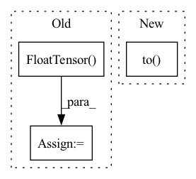

Pattern ID :33299

Before Change
model.to(device)
model.load_state_dict(torch.load(args.input_model))
model.eval()
input_ = torch.FloatTensor(
[0.1, 0.0, 0.1, 0.0, 0.0, 0.0, 1.0]
)
input_ = input_.to(device)
model_trt = torch2trt(model, [input_])
torch.save(model_trt.state_dict(), args.output_model)
After Change
args = parser.parse_args()
device = torch.device("cuda" if torch.cuda.is_available() else "cpu")
model = IKNet().to(device)
model.load_state_dict(torch.load(args.input_model))
model.eval()
print(model)
In pattern: SUPERPATTERN
Frequency: 3
Non-data size: 3
Instances
Fragment ID: 96039384
Project Name: youtalk/iknet-open-manipulator-x
Commit Name: 4d8b58b4f1279ca0be5f1ce61f38f5f566fb5f08
Time: 2021-05-08
Author: yutaka.kondo@youtalk.jp
File Name: iknet_torch2trt.py
M Class Name: AnonimousClass
N Class Name: AnonimousClass
M Method Name: main(0)
N Method Name: main(0)
M Parent Class:
N Parent Class:
M File Name: iknet_torch2trt.py
N File Name: iknet_torch2trt.py
M Start Line: 23
M End Line: 31
N Start Line: 23
N End Line: 31
'>
Before Change
batch=v.shape[0]
v_mag = torch.sqrt(v.pow(2).sum(1))// batch
if use_gpu:
v_mag = torch.max(v_mag, torch.autograd.Variable(torch.FloatTensor([1e-8]).cuda(gpu_id)))
else:
v_mag = torch.max(v_mag, torch.autograd.Variable(torch.FloatTensor([1e-8])))
v_mag = v_mag.view(batch,1).expand(batch,v.shape[1])
After Change
def normalize_vector(v, device):
batch = v.shape[0]
v_mag = torch.sqrt(v.pow(2).sum(1))// batch
v_mag = torch.max(v_mag, torch.autograd.Variable(torch.FloatTensor([1e-8]))).to(device)
v_mag = v_mag.view(batch,1).expand(batch,v.shape[1])
v = v/v_mag
return v
'>
Fragment ID: 96039387
Project Name: thohemp/6drepnet
Commit Name: dee31598a11072c30b16454285441382a8cf27e4
Time: 2023-02-25
Author: mucun.wuxian@gmail.com
File Name: sixdrepnet/utils.py
M Class Name: AnonimousClass
N Class Name: AnonimousClass
M Method Name: normalize_vector(2)
N Method Name: normalize_vector(3)
M Parent Class:
N Parent Class:
M File Name: sixdrepnet/utils.py
N File Name: sixdrepnet/utils.py
M Start Line: 118
M End Line: 125
N Start Line: 117
N End Line: 120
'>
Before Change
self.Lk = self._cheb_poly(adj_mx, self.Ks)
self._logger.info("cheb_poly_Lk shape: " + str(self.Lk.shape))
if config["gpu"]:
self.Lk = torch.FloatTensor(self.Lk).cuda()
else:
self.Lk = torch.FloatTensor(self.Lk)
// 模型结构
After Change
adj_mx = self._scaled_laplacian(adj_mx)
self.Lk = self._cheb_poly(adj_mx, self.Ks)
self._logger.info("cheb_poly_Lk shape: " + str(self.Lk.shape))
self.Lk = torch.FloatTensor(self.Lk).to(self.device)
// 模型结构
self.st_conv1 = st_conv_block(self.Ks, self.Kt, self.num_nodes, self.blocks[0],
self.drop_prob, self.Lk, self.device)
self.st_conv2 = st_conv_block(self.Ks, self.Kt, self.num_nodes, self.blocks[1],
'>
Fragment ID: 96039386
Project Name: libcity/bigscity-libcity
Commit Name: c21f726b01065f1cdc528b86ab5e457db090f80a
Time: 2021-01-31
Author: 35984903+aptx1231@users.noreply.github.com
File Name: trafficdl/model/traffic_speed_prediction/STGCN.py
M Class Name: STGCN
N Class Name: STGCN
M Method Name: __init__(3)
N Method Name: __init__(3)
M Parent Class: AbstractModel
N Parent Class: AbstractModel
M File Name: trafficdl/model/traffic_speed_prediction/STGCN.py
N File Name: trafficdl/model/traffic_speed_prediction/STGCN.py
M Start Line: 148
M End Line: 155
N Start Line: 143
N End Line: 156